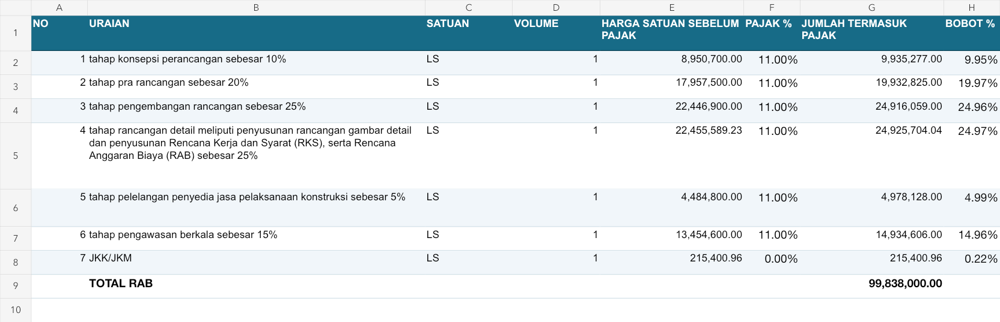

Verifikasi impor dan ekspor Excel
26 Oktober 2026 — seSendok. Data uji impor dijalankan pada database QA terpisah.
85ekspor umum
85template impor
28ekspor khusus
52modul impor
Perbaikan
- Format bersama untuk tabel, header berwarna, baris berselang, font Arial, lebar kolom berdasarkan isinya, pembungkusan uraian, header/footer cetak dan nomor halaman.
- Header tabel berulang saat cetak, freeze pane, area cetak dan orientasi yang sesuai jumlah kolom.
- NPWP tetap teks: tipe string XLSX dan format Text (@); nol awal dan nilai lebih dari 15 digit diuji. MariaDB menggunakan varchar. Sel NPWP numerik ditolak dengan petunjuk pengisian ulang.
- Impor memakai validasi tambah data yang sama: scope, hierarki, relasi, penugasan, kunci dokumen dan batas anggaran. Baris gagal dibatalkan sendiri dan dilaporkan nomor barisnya.
- Impor realisasi melewati layanan transaksi kontrak, bukan menulis langsung ke view; batas nilai kontrak ikut diperiksa. Header kosong tidak menggeser pemetaan; header ganda ditolak; tanggal serial Excel dibaca sebagai tanggal; baris kosong dilewati.
- Template impor dibuat dari struktur tabel saat ini dan tautannya kembali terlihat di form.
- RAB membawa pajak, jumlah dan bobot yang dihitung ulang, dengan sheet Jadwal dan Kurva S terpisah. Impor ulang mempertahankan ID item dan jadwal. Format lama tanpa kolom pajak mempertahankan pajak item yang cocok.
- RKPD mengekspor indikator, target, pagu, lokasi dan kelompok sasaran; tidak memakai kolom rincian belanja yang tidak sesuai.
- Nilai nol tetap ditulis, laporan kosong tidak membuat formula melingkar, dan notifikasi hasil impor tidak ditimpa refresh daftar.
- Ekspor pemetaan dibatasi tahun/wilayah/tipe dan satu hasil per ID pemetaan; format data besar diterapkan per kolom.
Ekspor pemetaan uji: 3.7 detik. Header/footer dan style diperiksa pada seluruh workbook yang diuji; contoh terpilih dirender untuk pemeriksaan tampilan.
Contoh tampilan RAB

Regresi impor browser
{
"meta": {
"total": 2,
"berhasil": 1,
"gagal": 1
},
"message": "Impor selesai: 1 dari 2 baris berhasil; 1 baris gagal.",
"warning_visible": true,
"warning_text": "Impor selesai: 1 dari 2 baris berhasil; 1 baris gagal.Baris 2: Validation gagal — {\"direktur\":\"direktur wajib diisi\"}",
"template_visible": true
}
Cakupan pemeriksaan
- Uji impor menggunakan data acuan valid per modul, kasus negatif terfokus, dan satu regresi form browser. Tidak mencakup semua variasi file Excel buatan pihak ketiga.
- Pemeriksaan workbook meliputi file XLSX/style/header/footer/lebar kolom dan pratinjau terpilih. Bukan pemeriksaan visual manual setiap sel dari semua ekspor.
Ekspor khusus — 28 lulus
| export | sheets | status |
|---|
| rkpd-detail | 1 | PASS |
| rkpd-rekap | 1 | PASS |
| rkpd_p-detail | 1 | PASS |
| rkpd_p-rekap | 1 | PASS |
| renja-detail | 33 | PASS |
| renja-rekap | 1 | PASS |
| renja-harga-sama | 33 | PASS |
| renja_p-detail | 43 | PASS |
| renja_p-rekap | 1 | PASS |
| renja_p-harga-sama | 43 | PASS |
| rka-detail | 33 | PASS |
| rka-rekap | 1 | PASS |
| rka-harga-sama | 33 | PASS |
| rka_p-detail | 43 | PASS |
| rka_p-rekap | 1 | PASS |
| rka_p-harga-sama | 43 | PASS |
| dpa-detail | 33 | PASS |
| dpa-rekap | 1 | PASS |
| dpa-harga-sama | 33 | PASS |
| dppa-detail | 43 | PASS |
| dppa-rekap | 1 | PASS |
| dppa-harga-sama | 43 | PASS |
| rab | 3 | PASS |
| kontrak | 1 | PASS |
| spj | 1 | PASS |
| lra | 1 | PASS |
| bulanan | 1 | PASS |
| renstra | 2 | PASS |
Ekspor umum dan template — 170 lulus
| type | profile | sheets | status |
|---|
| export | akun | 1 | PASS |
| export | sbu | 1 | PASS |
| export | ssh | 1 | PASS |
| export | asb | 1 | PASS |
| export | hspk | 1 | PASS |
| export | mapping | 1 | PASS |
| export | aset | 1 | PASS |
| export | organisasi | 1 | PASS |
| export | satuan | 1 | PASS |
| export | satuan_teks | 1 | PASS |
| export | sumber_dana | 1 | PASS |
| export | wilayah | 1 | PASS |
| export | peraturan | 1 | PASS |
| export | rekanan | 1 | PASS |
| export | renja | 1 | PASS |
| export | renja_p | 1 | PASS |
| export | renstra_skpd | 1 | PASS |
| export | tujuan_sasaran_renstra | 1 | PASS |
| export | asn | 1 | PASS |
| export | pppk | 1 | PASS |
| export | riwayat_jabatan | 1 | PASS |
| export | riwayat_pangkat | 1 | PASS |
| export | cuti | 1 | PASS |
| export | sk_pegawai | 1 | PASS |
| export | pejabat_tahunan | 1 | PASS |
| export | register_surat | 1 | PASS |
| export | misi_renstra_neo | 1 | PASS |
| export | tujuan_renstra_neo | 1 | PASS |
| export | sasaran_renstra_neo | 1 | PASS |
| export | indikator_sasaran_renstra_neo | 1 | PASS |
| export | program_renstra_neo | 1 | PASS |
| export | indikator_program_renstra_neo | 1 | PASS |
| export | kegiatan_renstra_neo | 1 | PASS |
| export | sub_kegiatan_renstra_neo | 1 | PASS |
| export | referensi_sub_kegiatan_renstra | 1 | PASS |
| export | renstra_neo | 1 | PASS |
| export | periode_rpjmd | 1 | PASS |
| export | rekening_kegiatan | 1 | PASS |
| export | kontrak | 1 | PASS |
| export | trx_naskah_dinas | 1 | PASS |
| export | ref_klasifikasi_keamanan | 1 | PASS |
| export | sk | 1 | PASS |
| export | pengaturan | 1 | PASS |
| export | group_sub_kegiatan | 1 | PASS |
| export | profil | 1 | PASS |
| export | wallchat | 1 | PASS |
| export | halaman_berita | 1 | PASS |
| export | akun_neo | 1 | PASS |
| export | rkpd | 1 | PASS |
| export | rkpd_p | 1 | PASS |
| export | rka | 1 | PASS |
| export | dpa | 1 | PASS |
| export | rka_p | 1 | PASS |
| export | dppa | 1 | PASS |
| export | realisasi | 1 | PASS |
| export | rab_kontrak | 1 | PASS |
| export | pejabat_ppk | 1 | PASS |
| export | pejabat_pptk | 1 | PASS |
| export | pejabat_pengadaan | 1 | PASS |
| export | absensi | 1 | PASS |
| export | penugasan_subkegiatan | 1 | PASS |
| export | user_opd_dropdown | 1 | PASS |
| export | sub_kegiatan_penugasan | 1 | PASS |
| export | kop_surat | 1 | PASS |
| export | rpjmd_kabupaten | 1 | PASS |
| export | usulan_pembangunan | 1 | PASS |
| export | evaluasi_renja | 1 | PASS |
| export | iku_opd | 1 | PASS |
| export | pohon_kinerja | 1 | PASS |
| export | perjanjian_kinerja | 1 | PASS |
| export | perjanjian_kinerja_detail | 1 | PASS |
| export | pengukuran_kinerja | 1 | PASS |
| export | evaluasi_renstra | 1 | PASS |
| export | renja_kinerja | 1 | PASS |
| export | renstra_dropdown | 1 | PASS |
| export | sasaran_renstra_dropdown | 1 | PASS |
| export | program_renstra_dropdown | 1 | PASS |
| export | iku_dropdown | 1 | PASS |
| export | pohon_kinerja_dropdown | 1 | PASS |
| export | pk_dropdown | 1 | PASS |
| export | pk_detail_dropdown | 1 | PASS |
| export | struktur_jabatan_aktif_dropdown | 1 | PASS |
| export | sakip_sumber_dropdown | 1 | PASS |
| export | sub_kegiatan_renstra_dropdown | 1 | PASS |
| export | renja_kinerja_dropdown | 1 | PASS |
| template | akun | 1 | PASS |
| template | sbu | 1 | PASS |
| template | ssh | 1 | PASS |
| template | asb | 1 | PASS |
| template | hspk | 1 | PASS |
| template | mapping | 1 | PASS |
| template | aset | 1 | PASS |
| template | organisasi | 1 | PASS |
| template | satuan | 1 | PASS |
| template | satuan_teks | 1 | PASS |
| template | sumber_dana | 1 | PASS |
| template | wilayah | 1 | PASS |
| template | peraturan | 1 | PASS |
| template | rekanan | 1 | PASS |
| template | renja | 1 | PASS |
| template | renja_p | 1 | PASS |
| template | renstra_skpd | 1 | PASS |
| template | tujuan_sasaran_renstra | 1 | PASS |
| template | asn | 1 | PASS |
| template | pppk | 1 | PASS |
| template | riwayat_jabatan | 1 | PASS |
| template | riwayat_pangkat | 1 | PASS |
| template | cuti | 1 | PASS |
| template | sk_pegawai | 1 | PASS |
| template | pejabat_tahunan | 1 | PASS |
| template | register_surat | 1 | PASS |
| template | misi_renstra_neo | 1 | PASS |
| template | tujuan_renstra_neo | 1 | PASS |
| template | sasaran_renstra_neo | 1 | PASS |
| template | indikator_sasaran_renstra_neo | 1 | PASS |
| template | program_renstra_neo | 1 | PASS |
| template | indikator_program_renstra_neo | 1 | PASS |
| template | kegiatan_renstra_neo | 1 | PASS |
| template | sub_kegiatan_renstra_neo | 1 | PASS |
| template | referensi_sub_kegiatan_renstra | 1 | PASS |
| template | renstra_neo | 1 | PASS |
| template | periode_rpjmd | 1 | PASS |
| template | rekening_kegiatan | 1 | PASS |
| template | kontrak | 1 | PASS |
| template | trx_naskah_dinas | 1 | PASS |
| template | ref_klasifikasi_keamanan | 1 | PASS |
| template | sk | 1 | PASS |
| template | pengaturan | 1 | PASS |
| template | group_sub_kegiatan | 1 | PASS |
| template | profil | 1 | PASS |
| template | wallchat | 1 | PASS |
| template | halaman_berita | 1 | PASS |
| template | akun_neo | 1 | PASS |
| template | rkpd | 1 | PASS |
| template | rkpd_p | 1 | PASS |
| template | rka | 1 | PASS |
| template | dpa | 1 | PASS |
| template | rka_p | 1 | PASS |
| template | dppa | 1 | PASS |
| template | realisasi | 1 | PASS |
| template | rab_kontrak | 1 | PASS |
| template | pejabat_ppk | 1 | PASS |
| template | pejabat_pptk | 1 | PASS |
| template | pejabat_pengadaan | 1 | PASS |
| template | absensi | 1 | PASS |
| template | penugasan_subkegiatan | 1 | PASS |
| template | user_opd_dropdown | 1 | PASS |
| template | sub_kegiatan_penugasan | 1 | PASS |
| template | kop_surat | 1 | PASS |
| template | rpjmd_kabupaten | 1 | PASS |
| template | usulan_pembangunan | 1 | PASS |
| template | evaluasi_renja | 1 | PASS |
| template | iku_opd | 1 | PASS |
| template | pohon_kinerja | 1 | PASS |
| template | perjanjian_kinerja | 1 | PASS |
| template | perjanjian_kinerja_detail | 1 | PASS |
| template | pengukuran_kinerja | 1 | PASS |
| template | evaluasi_renstra | 1 | PASS |
| template | renja_kinerja | 1 | PASS |
| template | renstra_dropdown | 1 | PASS |
| template | sasaran_renstra_dropdown | 1 | PASS |
| template | program_renstra_dropdown | 1 | PASS |
| template | iku_dropdown | 1 | PASS |
| template | pohon_kinerja_dropdown | 1 | PASS |
| template | pk_dropdown | 1 | PASS |
| template | pk_detail_dropdown | 1 | PASS |
| template | struktur_jabatan_aktif_dropdown | 1 | PASS |
| template | sakip_sumber_dropdown | 1 | PASS |
| template | sub_kegiatan_renstra_dropdown | 1 | PASS |
| template | renja_kinerja_dropdown | 1 | PASS |
Impor modul umum/anggaran/kontrak — 51 lulus
| profile | role | status |
|---|
| peraturan | admin_opd | PASS |
| rekanan | admin_opd | PASS |
| asn | admin_opd | PASS |
| pppk | admin_opd | PASS |
| riwayat_jabatan | admin_opd | PASS |
| riwayat_pangkat | admin_opd | PASS |
| cuti | admin_opd | PASS |
| sk_pegawai | admin_opd | PASS |
| pejabat_tahunan | admin_opd | PASS |
| misi_renstra_neo | admin_opd | PASS |
| tujuan_renstra_neo | admin_opd | PASS |
| sasaran_renstra_neo | admin_opd | PASS |
| indikator_sasaran_renstra_neo | admin_opd | PASS |
| program_renstra_neo | admin_opd | PASS |
| indikator_program_renstra_neo | admin_opd | PASS |
| kegiatan_renstra_neo | admin_opd | PASS |
| sub_kegiatan_renstra_neo | admin_opd | PASS |
| renstra_neo | admin_opd | PASS |
| absensi | admin_opd | PASS |
| usulan_pembangunan | admin_opd | PASS |
| evaluasi_renja | admin_opd | PASS |
| iku_opd | admin_opd | PASS |
| pohon_kinerja | admin_opd | PASS |
| perjanjian_kinerja | admin_opd | PASS |
| perjanjian_kinerja_detail | admin_opd | PASS |
| pengukuran_kinerja | admin_opd | PASS |
| evaluasi_renstra | admin_opd | PASS |
| renja_kinerja | admin_opd | PASS |
| organisasi | admin_wilayah | PASS |
| rpjmd_kabupaten | admin_wilayah | PASS |
| penugasan_subkegiatan | kepala_opd | PASS |
| wilayah | super_admin | PASS |
| akun | tapd | PASS |
| sbu | tapd | PASS |
| ssh | tapd | PASS |
| asb | tapd | PASS |
| hspk | tapd | PASS |
| mapping | tapd | PASS |
| aset | tapd | PASS |
| satuan | tapd | PASS |
| sumber_dana | tapd | PASS |
| rekening_kegiatan | tapd | PASS |
| rkpd | admin_opd | PASS |
| rkpd_p | admin_opd | PASS |
| renja | admin_opd | PASS |
| renja_p | admin_opd | PASS |
| rka | admin_opd | PASS |
| rka_p | admin_opd | PASS |
| dpa | admin_opd | PASS |
| dppa | admin_opd | PASS |
| kontrak | admin_opd | PASS |
Pengujian terfokus
PASS: Database QA terpisah
PASS: Uraian lebih lebar daripada nomor
PASS: Header dan footer cetak serta nomor halaman
PASS: NPWP tetap teks utuh dengan nol awal dan lebih dari 15 digit
PASS: Header kosong tidak menggeser kolom dan baris kosong dilewati
PASS: Identifier nol awal dan scope wilayah dipertahankan
PASS: Tanggal serial Excel diimpor sebagai tanggal ASN
PASS: Header ganda ditolak dengan pesan jelas
PASS: Impor parsial menunjukkan nomor baris gagal dan melanjutkan baris valid
PASS: NPWP numerik ditolak dengan petunjuk perbaikan
PASS: Impor realisasi memakai layanan transaksi kontrak
PASS: Impor realisasi melebihi kontrak ditolak
PASS: Impor SIPD ssh dan angka desimal Indonesia
PASS: Impor ulang SIPD ssh memperbarui data yang sama
PASS: Impor SIPD hspk dan angka desimal Indonesia
PASS: Impor ulang SIPD hspk memperbarui data yang sama
PASS: Impor SIPD asb dan angka desimal Indonesia
PASS: Impor ulang SIPD asb memperbarui data yang sama
PASS: Impor SIPD sbu dan angka desimal Indonesia
PASS: Impor ulang SIPD sbu memperbarui data yang sama
PASS: Role viewer tidak dapat melakukan impor
PASS: Ekspor RAB membawa pajak, jadwal dan kurva dalam sheet terpisah
PASS: Ekspor-impor RAB mempertahankan item dan ID jadwal
PASS: Ekspor-impor RAB mempertahankan total termasuk pajak
PASS: Jadwal tidak hilang saat impor ulang RAB
PASS: Impor RAB lama tanpa kolom pajak mempertahankan pajak yang ada
PASS: Jumlah RAB Excel dihitung ulang ketika harga satuan diubah
PASS: Ekspor spj kosong tidak membuat formula melingkar
PASS: Ekspor lra kosong tidak membuat formula melingkar
PASS: Header/footer sheet RAB
PASS: Header/footer sheet Jadwal
PASS: Header/footer sheet Kurva S
Ringkasan JSON · Ekspor/template · Ekspor khusus · Impor modul